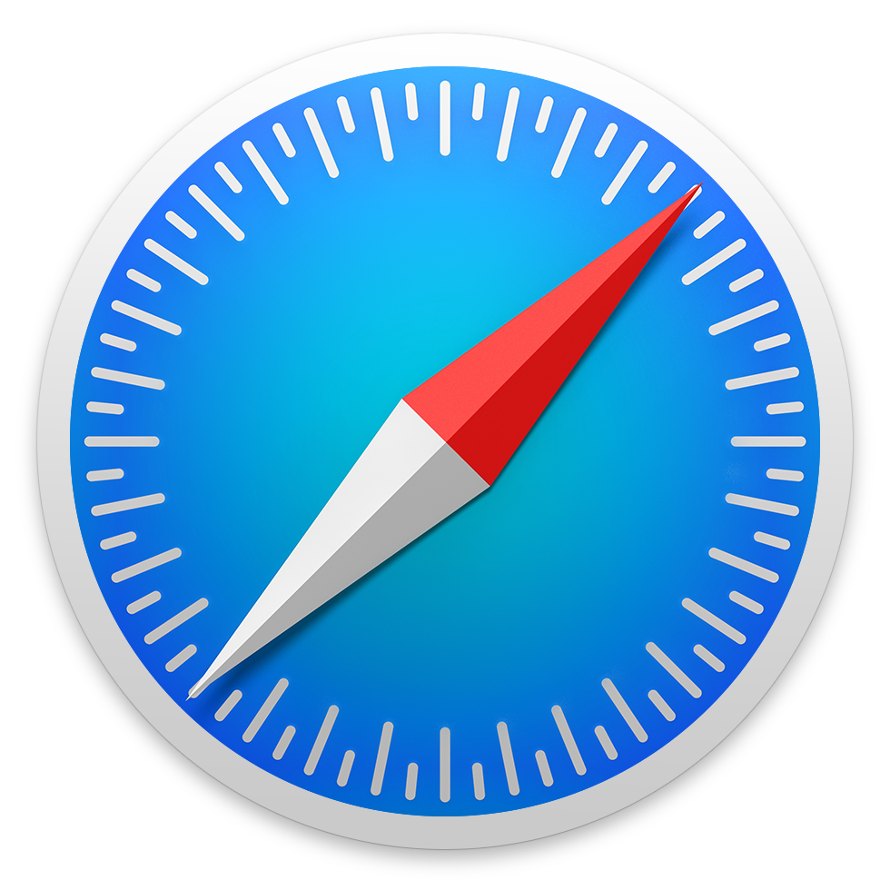

Storing data as Knowledge Graphs
1989, CERN Switzerland
Tim Berners-Lee
inventor of the World Wide Web
The Web's foundational ideas
-
Data is linked to each other
Across heterogeneous systems (decentralized)
-
Browser programs
Visualises data and helps users navigating the Web
-
Everyone can read and write data
Web browsers are editors
-
Open standards
Anyone can implement tools (browsers, ...) on top of it
1990-... World-wide adoption
Not just for researchers anymore
The Web is a global information space
a.k.a. The World Wide Web (WWW)
Mostly used by humans through Web browsers



Web is focused on humans
-
Web pages show information
Visualized using Web browsers
-
Clicking on links
To discover new information
-
Search information
Using search engines such as Google, Bing, ...
Achieving tasks requires manual effort
-
Will it rain next week?
- Find a weather prediction website
- Select your location
- Navigate to next week
-
Finding a travel time and destination for a group of people
- Comparing agendas
- Comparing interests: nature, musea, ...
- Regional temperatures
- Geopolitical status
- ...
What if intelligent agents
could do these tasks for us?